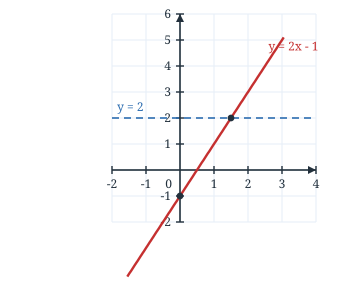
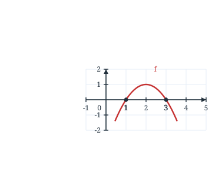
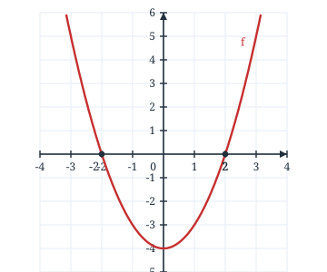
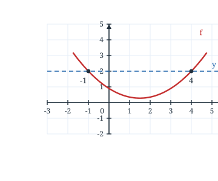
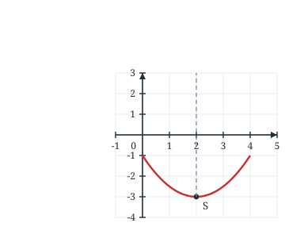

1Pour la fonction $f(x)=2x-1$, le coefficient directeur est :
Réponse : Dans $f(x)=ax+b$, $a=2$ est le coefficient directeur et $b=-1$ l'ordonnée à l'origine.
Première STMG · chapitre 9 · 20 questions
Score : 0 / 20
Réponse : Dans $f(x)=ax+b$, $a=2$ est le coefficient directeur et $b=-1$ l'ordonnée à l'origine.
Réponse : $f(3)=-2\times3+5=-6+5=-1$.
Réponse : $2x=1$ donc $x=\dfrac{1}{2}=0{,}5$.
Réponse : On calcule $y$ pour $x=2$ : $2\times2-1=3$, ce qui est bien l'ordonnée de $A$.
Réponse : L'ordonnée à l'origine est $3$ ; le coefficient directeur vaut $\dfrac{-1-3}{2-0}=-2$.

Réponse : $2x-1>2 \iff 2x>3 \iff x>1{,}5$ : sur le graphique, la droite est au-dessus de la droite $y=2$ à partir de $x=1{,}5$.
Réponse : $2x-1\leqslant0 \iff x\leqslant0{,}5$ : la droite est sous l'axe des abscisses jusqu'au point d'abscisse $0{,}5$.

Réponse : La parabole est au-dessus de l'axe des abscisses entre ses deux racines, et comme $a<0$ elle est « tournée vers le bas » : $f(x)>0$ sur $\left]1\,;3\right[$.

Réponse : $f(x)>0 \iff x^{2}>4 \iff x<-2$ ou $x>2$ : les branches de la parabole sont au-dessus de l'axe à l'extérieur des racines $-2$ et $2$.

Réponse : Chaque point d'intersection donne une solution : il y en a deux, $x=-1$ et $x=4$.

Réponse : Le minimum est l'ordonnée du sommet lorsque la parabole est tournée vers le haut : il vaut $-3$, atteint en $x=2$.
Réponse : $240\times\dfrac{15}{100}=240\times0{,}15=36$.
Réponse : Une hausse de $20\,\%$ donne le coefficient multiplicateur $1+\dfrac{20}{100}=1{,}2$.
Réponse : $80\times1{,}25=100$ €.
Réponse : $-3x>-6 \iff x<2$ : on divise par $-3$, donc le sens de l'inégalité change.
Réponse : Les $5$ valeurs sont rangées : la médiane est la $3^{\text{e}}$, soit $7$.
Réponse : Les issues favorables sont $2$, $4$ et $6$ : $p=\dfrac{3}{6}=\dfrac{1}{2}$.
Réponse : $u_{5}=3\times5+2=17$.
Réponse : $\dfrac{3}{4}+\dfrac{2}{4}=\dfrac{5}{4}$.
Réponse : $5x-3x=10-2$, soit $2x=8$ et $x=4$.